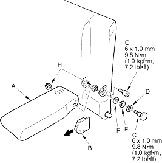
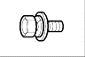
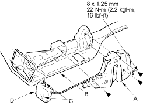
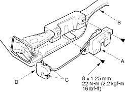

NOTE:
- When prying with a flat-tip screwdriver, wrap it with protective tape to prevent damage.
- Take care not to tear the seams or damage the seat covers.
- Remove the armrest (A).
- Pull out the pivot cover (B) forward, then remove it.
- Remove the pivot bolt (C), wave washer (D), washer (E), nylon washer (F) and pin bolt (G).
- Remove the armrest and bushing (H).

- Install the armrest in the reverse order or removal.
- Remove the seat-back (see page 20-237).
- Separate the seat-back frame and seat-back cover/pad (see page 20-239).
- Remove the bolts, then remove the seat-back latch (A) from the seat-back frame (B) and release the pivot pin (C) of the latch lever (D) from the seat-back frame.
| Fastener Locations |
 : Bolt, 3 or 2 : Bolt, 3 or 2 |

With recline:

With recline:

- Install the latch in the reverse order of removal and note these items:
- Make sure the seat-back locks and unlocks properly.
- Make sure the seat-back with recline adjusts properly.